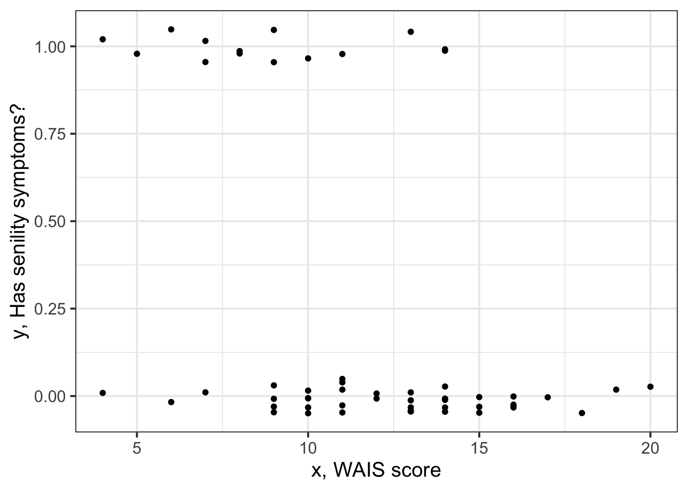
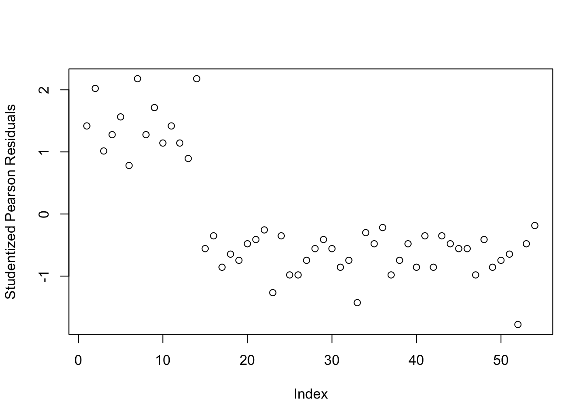
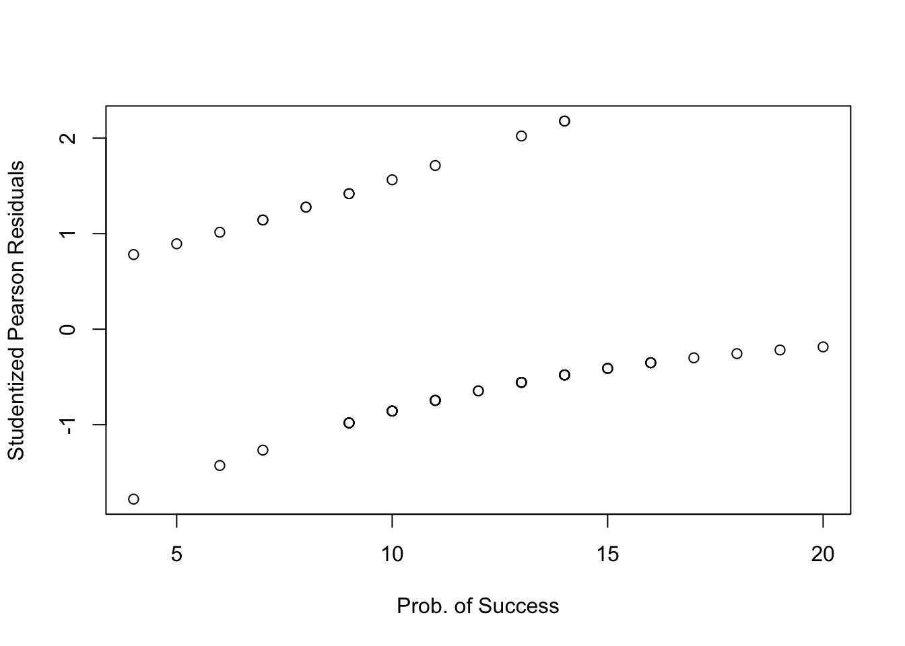
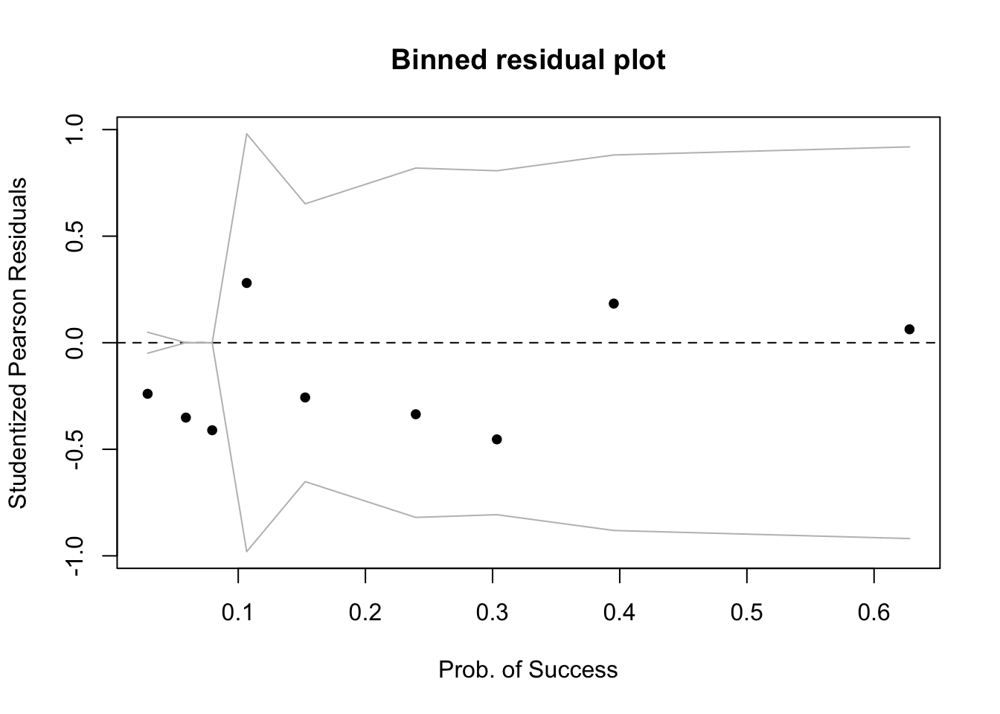
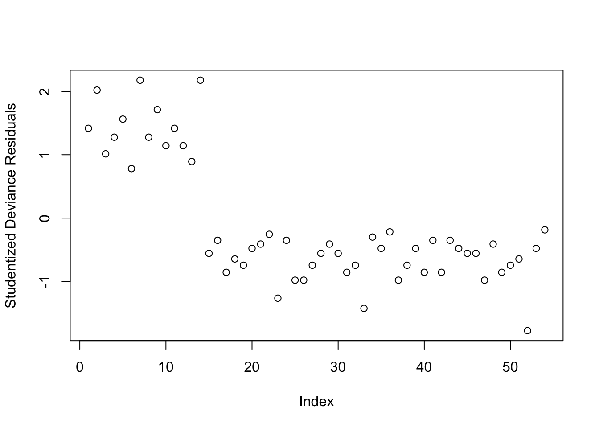

More About Logistic Regression
PREREQUISITES
Let \(A\) and \(B\) be two positive numbers:
\[ \begin{aligned} e^{A + B} &= e^A \times e^B \\ e^{\log(A)} &= A \\ \log \left( \frac{A}{B} \right) &= \log(A) - \log(B) \\ \log (A \times B) &= \log(A) + \log(B) \end{aligned} \]
Senility and WAIS
A sample of elderly people was given a psychiatric examination to determine symptoms of senility were present. Other measurements taken at the same time included the score on a subset of the Wechsler Adult Intelligent Scale (WAIS).
The data represent symptoms of senility (senility = 1 if symptoms are present and senility= 0 otherwise) and WAIS scores (wais) for \(n = 54\) people.
You can download the data at following link: https://uoepsy.github.io/data/SenilityWAIS.csv
library(tidyverse)
sen <- read_csv(file = 'https://uoepsy.github.io/data/SenilityWAIS.csv')
head(sen)## # A tibble: 6 x 2
## wais senility
## <dbl> <dbl>
## 1 9 1
## 2 13 1
## 3 6 1
## 4 8 1
## 5 10 1
## 6 4 1First, we should plot the data to understand what’s going on. We use geom_jitter rather than geom_point otherwise we will have multiple points on top of each other as there are multiple individuals with the same wais’ values:
ggplot(sen, aes(wais, senility)) +
geom_jitter(width = 0, height = 0.05) +
labs(x = "x, WAIS score",
y = "y, Has senility symptoms?")
Since we are interested in understanding how the probability of having senility symptoms changes as a function of the WAIS score, the response variable is \(y\) = senility and the predictor is \(x\) = wais.
We will fit the following logistic regression model: \[ \log \left( \frac{p}{1-p} \right) = \beta_0 + \beta_1 \ x \] where \(p = P(y = 1)\) is the probability that \(y = 1\) for an individual with WAIS score equal to \(x\).
mdl1 = glm(senility ~ wais, family = binomial, data = sen)
summary(mdl1)##
## Call:
## glm(formula = senility ~ wais, family = binomial, data = sen)
##
## Deviance Residuals:
## Min 1Q Median 3Q Max
## -1.6702 -0.7402 -0.4749 0.5200 2.1157
##
## Coefficients:
## Estimate Std. Error z value Pr(>|z|)
## (Intercept) 2.4040 1.1918 2.017 0.04369 *
## wais -0.3235 0.1140 -2.838 0.00453 **
## ---
## Signif. codes: 0 '***' 0.001 '**' 0.01 '*' 0.05 '.' 0.1 ' ' 1
##
## (Dispersion parameter for binomial family taken to be 1)
##
## Null deviance: 61.806 on 53 degrees of freedom
## Residual deviance: 51.017 on 52 degrees of freedom
## AIC: 55.017
##
## Number of Fisher Scoring iterations: 5Interpretation of coefficients
To interpret the fitted coefficients, we first exponentiate the model: \[ \begin{aligned} \log \left( \frac{p}{1-p} \right) &= \beta_0 + \beta_1 x \\ e^{ \log \left( \frac{p}{1-p} \right) } &= e^{\beta_0 + \beta_1 x } \\ \frac{p}{1-p} &= e^{\beta_0} \ e^{\beta_1 x} \end{aligned} \]
and recall that the probability of success divided by the probability of failure is the odds of success: \[ \frac{p}{1-p} = \text{odds}(y = 1) \]
Intercept
If \(x = 0\): \[ \frac{p_0}{1-p_0} = e^{\beta_0} \ e^{\beta_1 x} = e^{\beta_0} \]
That is, \(e^{\beta_0}\) represents the odds of having symptoms of senility for individuals with a WAIS score of 0.
In other words, for those with a WAIS score of 0, the probability of having senility symptoms is \(e^{\beta_0}\) times that of non having them.
Slope
If \(x = 1\): \[ \frac{p_1}{1-p_1} = e^{\beta_0} \ e^{\beta_1 x} = e^{\beta_0} \ e^{\beta_1} \]
Now consider taking the ratio of the odds of senility symptoms when \(x=1\) to the odds of senility symptoms when \(x = 0\): \[ \frac{p_1 / (1 - p_1)}{p_0 / (1 - p_0)} = \frac{e^{\beta_0} \ e^{\beta_1}}{e^{\beta_0}} = e^{\beta_1} \]
So, \(e^{\beta_1}\) represents the odds ratio for a 1 unit increase in WAIS score.
It is typically interpreted by saying that for a one-unit increase in WAIS score the odds of senility symptoms increase by a factor of \(e^{\beta_1}\).
In our model
exp(coef(mdl1))## (Intercept) wais
## 11.06784 0.72359The odds of senility symptoms for individuals scoring 0 on the WAIS test is 11:1. Or, the probability of having senility symptoms for those scoring 0 on the WAIS test is 11 times the probability of not having senility symptoms.
For every unit increase in WAIS score, the odds of senility symptoms reduces by a factor of 0.72
Diagnosing model fit: Residuals
Unlike linear regression, logistic regression has 2 main types of residuals.
- Pearson residuals
- Deviance residuals
We will now discuss each in turn.
In addition, just like in linear regression, each of the above can be standardized or studentized if you wish to. We won’t discuss how to standardize each of those as the formula is difficult, but the idea is to standardize them to make them have a mean of zero and standard deviation = 1.
Remember the difference?
- \(i\)th standardized residual = residual / SD(residual)
- \(i\)th studentized residual = residual / SD(residual from model fitted without observation \(i\))
Pearson residuals
Pearson residuals are similar to the Pearson residuals you might remember from the chi-squared test in DAPR1. \[ Pres_i = \frac{Observed - Expected}{\sqrt{Expected}} \]
In logistic regression, this is \[ Pres_i = \frac{y_i - \hat p_i}{\sqrt{\hat p_i (1 - \hat p_i)}} \]
where
- \(y_i\) is the observed response for unit \(i\), either 0 (failure) or 1 (success)
- \(\hat p_i\) is the model-predicted probability of success
There is one residual per each case (row) in the dataset:
Pres <- residuals(mdl1, type = 'pearson')The standardized Pearson residuals (zero mean and unit standard deviation) are obtained as follows:
SPres <- rstandard(mdl1, type = 'pearson')The standardized Pearson residuals (also zero mean and unit standard deviation) are obtained as follows:
StuPres <- rstudent(mdl1, type = 'pearson')In the following, I will use the Studentized residuals for the plots, but if you wish to, you can use the standardized ones.
First, we plot the Studentized Pearson Residuals against their index, and we check whether there are any values larger than 2 in absolute value (that is larger than 2 or smaller than -2). Some people prefer to be strict and deem as outlier those greater than 3 in absolute value as most values should be within -3 and 3.
plot(StuPres, ylab = "Studentized Pearson Residuals")
Yes, there appear to be 3 residuals with a value slightly larger than 2 in absolute value. We will keep these in mind and check later if they are also influential points.
Plotting the (Studentized) Pearson residuals against the fitted values or the predictor is not very informative in logistic regression as you can see below:
plot(fitted(mdl1), StuPres,
xlab = 'Prob. of Success', ylab = 'Studentized Pearson Residuals')
plot(sen$wais, StuPres,
xlab = 'Prob. of Success', ylab = 'Studentized Pearson Residuals')
Sometimes a binned plot1 can be more informative, but not always! It works by combining together all responses for people having the same covariate \(x_i\) value, and taking the average Studentized Pearson residual for those.
Before using this function, make sure you have installed the arm package!
arm::binnedplot(fitted(mdl1), StuPres,
xlab = 'Prob. of Success', ylab = 'Studentized Pearson Residuals')
There doesn’t appear to be any extreme values.
Deviance residuals
What does deviance mean? In logistic regression, deviance is a measure of deviation, discrepancy, mismatch between the data and the model. You can think of it as a generalisation of the terms making up the residual sum of squares in simple linear regression.
Dres <- residuals(mdl1, type = 'deviance')The standardized deviance residuals (zero mean and unit standard deviation) are obtaiend with
SDres <- rstandard(mdl1, type = 'deviance')And the Studentized deviance residuals (also zero mean and unit standard deviation) are found via:
StuDres <- rstudent(mdl1, type = 'deviance')Again, we check whether any residuals are larger than 2 or 3 in absolute value:
plot(StuDres, ylab = 'Studentized Deviance Residuals')
All fine!
Again, a plot against the fitted values or the predictors isn’t that useful in logistic regression…
plot(fitted(mdl1), StuDres,
xlab = 'Prob. of Success', ylab = 'Studentized Deviance Residuals')
plot(sen$wais, StuDres,
xlab = 'Prob. of Success', ylab = 'Studentized Deviance Residuals')
So we will check against a binned plot:
arm::binnedplot(fitted(mdl1), StuDres,
xlab = 'Prob. of Success', ylab = 'Studentized Deviance Residuals')Again, it seems like everything is fine, no extremely high values.
Which residuals should I use???
Both! Compute both, and for visual exploration most of the time it’s fine to use the deviance residuals.
If you use standardized or studentized ones it’s easier to explore extreme values as we expect most residuals to be within -2, 2 or -3, 3.
If you do not provide the type = ... argument to the function residuals(), then it will use the Deviance residuals by default, and so will the function rstandard() and rstudent()!
Influential values
In logistic regression we typically check for influential observations by checking if there are any of the 54 cases in the dataset that have a Cook’s distance greater than 0.5 (moderately influential) or 1 (highly influential):
plot(cooks.distance(mdl1), ylab = "Cook's distance")None of the units in the dataset appears to have a Cook’s distance value greater than 0.5, hence there does not seem to be issues with influential points.
Diagnosing model fit: Goodness of fit statistics
In logistic regression there are two measures of goodness of fit. These are an extension of the ANOVA F-test in linear regression which test whether all slopes were 0 or at least one was not.
We test whether \[ \begin{aligned} H_0 &: \beta_1 = ... = 0 \\ H_1 &: \text{at least one }\beta \neq 0 \end{aligned} \]
using either:
- Pearson chi-squared statistic
- Hosmer–Lemeshow statistic
We are super lucky, as we already saved both Pearson residuals and the Deviance residuals, not the standardized and not the studentized ones, we just need to do respectively:
\[ X^2 = \sum Pres_i^2 \]
\[ D = \sum Dres_i^2 \]
Pearson chi-squared statistic
The Pearson chi-squared statistic is computed as \[ X^2 = \sum Pres_i^2 \]
where \(Pres_i\) is the \(i\)th Pearson residual from residuals(<fitted model>, type = 'pearson').
The test-statistic follows a chi-squared distribution with \(m - p\) degrees of freedom where
- \(m\) = number of distinct covariate combinations
- \(p\) = number of estimated parameters
We are so lucky, because we already did compute the required residuals.
m <- length(unique(sen$wais))
m## [1] 17p <- length(coef(mdl1))
p## [1] 2X2 <- sum(Pres^2)
X2## [1] 51.603311 - pchisq(X2, df = m - p)## [1] 6.568158e-06WARNING
This Pearson chi-squared goodness-of-fit test works reasonably well when the number of distinct covariate combinations is neither too small nor too large. If the number of patterns is too small, the test for goodness of fit is too coarse, whereas if the number of patterns is too large, the predicted number of successes for many of the patterns in the independent variables will be too small (i.e., the data are “thin” with less than five successes for many patterns), and so the distribution of the computed chi-squared is not reasonably described by the theoretical chi-squared distribution.
This situation is particularly likely to occur when one or more of the independent variables are continuous or in clinical studies when the total sample size is relatively small (below 100 patients).
Do not despair though! There is the Hosmer-Lemeshow goodness-of-fit test…
Hosmer-Lemeshow goodness-of-fit test
The Hosmer-Lemeshow goodness-of-fit test can be implemented via the performance package. Don’t forget to install it first with install.packages("performance")!
It divides the fitted probabilities into 10 bins by default, specified into n_bins = 10. Sometimes when we have small datasets, this might be too much, and we need to reduce it. It is good practice to try different values and see how much the p-value changes. If it is fairly consistent and above the significance level, you should be safe to accept goodness of fit!
# performance::performance_hosmer(mdl1, 10) # returns an error!
# performance::performance_hosmer(mdl1, 9) # returns an error!
performance::performance_hosmer(mdl1, 8)## # Hosmer-Lemeshow Goodness-of-Fit Test
##
## Chi-squared: 4.533
## df: 6
## p-value: 0.605performance::performance_hosmer(mdl1, 7)## # Hosmer-Lemeshow Goodness-of-Fit Test
##
## Chi-squared: 2.922
## df: 5
## p-value: 0.712performance::performance_hosmer(mdl1, 6)## # Hosmer-Lemeshow Goodness-of-Fit Test
##
## Chi-squared: 4.077
## df: 4
## p-value: 0.396performance::performance_hosmer(mdl1, 5)## # Hosmer-Lemeshow Goodness-of-Fit Test
##
## Chi-squared: 3.399
## df: 3
## p-value: 0.334At the 5% significance level, the p-values are non-significant. Hence, the sample results do not provide sufficient evidence to reject the null hypothesis that the model fits the data well.
Comparison of nested models
When moving from linear regression to more advanced and flexible models, testing of goodness of fit is more often done by comparing a wanted model to a simpler one. The only caveat is that the two models need to be nested, i.e. all predictors of one model needs to be within the other.
We want to compare the model we previously fitted against a model where all slopes are 0, i.e. a baseline model: \[ \begin{aligned} M_1 : \qquad\log \left( \frac{p}{1 - p} \right) &= \beta_0 \\ M_2 : \qquad \log \left( \frac{p}{1 - p} \right) &= \beta_0 + \beta_1 x \end{aligned} \]
The null hypothesis will be that the simpler model is a good fit, while the alternative is that the more complex model is needed.
In R we do the comparison as follows:
mdl_red <- glm(senility ~ 1, family = binomial, data = sen)
anova(mdl_red, mdl1, test = 'Chisq')## Analysis of Deviance Table
##
## Model 1: senility ~ 1
## Model 2: senility ~ wais
## Resid. Df Resid. Dev Df Deviance Pr(>Chi)
## 1 53 61.806
## 2 52 51.017 1 10.789 0.001021 **
## ---
## Signif. codes: 0 '***' 0.001 '**' 0.01 '*' 0.05 '.' 0.1 ' ' 1The above code shows the two fitted models
Model 1: senility ~ 1
Model 2: senility ~ waisAnd then reports the Residual Deviance of each model, 61.806 and 51.017 respectively. Remember the deviance is the equivalent of residual sum of squares in linear regression.
So, by adding the predictor \(x\) = wais to the model, we reduce our deviance from 61.806 to 51.017, i.e. we reduce it by 10.789. Is this reduction sufficient to be attributed solely to the contribution of the predictor, or could it just be due to random sampling variation? This is what the chi-squared test tells us!
The reduced model (\(M_1\)) has the slope set to zero \(\beta_1 = 0\). Its deviance is obtained by fitting a logistic regression model without any explanatory variables (but including a constant term). This deviance is found to be 61.806, with 53 degrees of freedom. The deviance statistic from a fit of the model with \(x\) = wais included is 51.017, with 52 degrees of freedom. The deviance dropped by 10.789, with a drop of one degree of freedom. The associated p-value from a chi-squared distribution with 1df is \(p = .001\).
There is strong evidence of an association between senility symptoms and scores on the Wechsler Adult Intelligent Scale.
Exercises
Kalkhoran et al. (2015)2 investigated predictors of dual use of cigarettes and smokeless tobacco products. Although their original sample size was large (\(n\) = 1324), they were interested in running separate logistic regression analyses within subgroups. Most of the sample used only cigarettes. One of the smaller subgroups contained subjects who used both cigarettes and smokeless tobacco products (\(n\)=61). For this problem we focus on this smaller subgroup of dual cigarette and smokeless tobacco users. The dependent variable, Q, is whether the subject made an attempt to quit using tobacco products (0 = no attempt to quit; 1 = attempted to quit). There is one multi-category independent variable, intention to quit, I, with four levels: never intend to quit, may intend to quit but not in the next 6 months, intend to quit in the next 6 months, intend to quit in the next 30 days.
The data can be found at the following link: https://uoepsy.github.io/data/QuitAttempts.csv
| Variable | Description |
|---|---|
| S | Subject |
| Q | Quitting (0 = No attempt to quit; 1 = Attempted to quit) |
| I | Intentions to Quit (1 = Never intend to quit; 2 = May intend to quit but not in the next 6 months; 3 = Intend to quit in the next 6 months; 4 = Intend to quit in the next 30 days) |
Read the data into R.
Perform a preliminary exploratory analysis of the data by computing summary statistics and visualising the distribution of the variables.
Fit a logistic regression of Q on I using ordinary logistic regression.
Be sure to treat the independent variable I as categorical rather than as continuous in these analyses (hint: you will need to make sure R will create for you dummy variables for each level of I).
What do you observe from the results?
Interpret the coefficients in the context of the study.
Investigate whether or not the studentized deviance residuals raise any concerns about outliers.
Investigate whether or not there are influential observations.
Compute the Pearson goodness-of-fit statistic and report its p-value.
Compute the Hosmer-Lemeshow goodness-of-fit statistic and report its p-value.
Perform a Deviance goodness-of-fit test by compare the following nested models:
\[ \begin{aligned} M_1 &: \qquad \log \left( \frac{p}{1 - p}\right) = \beta_0 \\ M_2 &: \qquad \log \left( \frac{p}{1 - p}\right) = \beta_0 + \beta_1 I2 + \beta_2 I3 + \beta_3 I4 \end{aligned} \]
Gelman, A., & Hill, J. (2006). Data Analysis Using Regression and Multilevel/Hierarchical Models (Analytical Methods for Social Research). Cambridge: Cambridge University Press. doi:10.1017/CBO9780511790942↩︎
Kalkhoran S, Grana RA, Neilands TB, and Ling PM. Dual use of smokeless tobacco or e-cigarettes with cigarettes and cessation. Am J Health Behav. 2015;39:277–284.↩︎